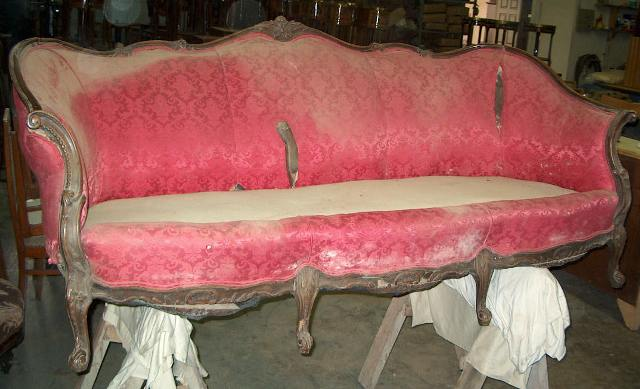
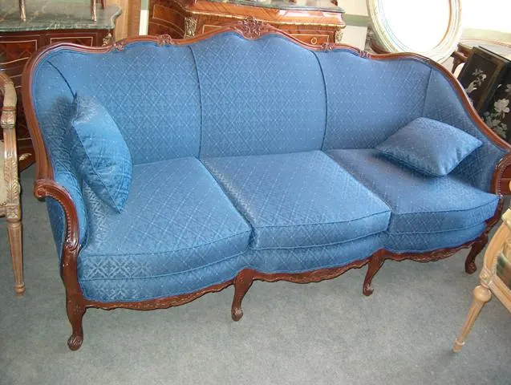

Fine upholstery · Washington DC · Maryland · Virginia
Beneath the fabric.
High-end upholstery for antique and modern seating — where the frame is repaired and refinished at the same bench that sews the cover, and the work goes far deeper than what shows.
Two crafts, one roof
The frame comes first.
Most upholstery shops send the woodwork out; most refinishers send the fabric out. In our Sterling workroom the same small, handpicked team does both — so a loose joint is re-glued, a cracked leg rebuilt and the show-wood hand polished before a single yard of new fabric goes on.
Upholstery here goes deeper than fabric. The journey begins by meticulously removing the old cover, then reinforcing or replacing the foam with premium-grade materials and rebuilding every element underneath — webbing, padding, structure — so the piece is comfortable, and stays that way.
Whether you are rejuvenating a family heirloom or adapting a piece to your evolving decor, we work closely with you to align the work with your vision. Every project is unique, and timelines vary with complexity and scope — we would rather be honest about that than hurried.
Request a free estimate →
The covering
Your vision, our hands.
Bring the fabric you have fallen for, or let us help you source one suited to the piece and the room. From removing the old cover to the final touches, we use only the finest materials.
The traditional details are done the traditional way, by hand: brass nailhead trim set one tack at a time, button tufting pulled through and tied off, damask matched at the seams, leather cut and fitted to carved frames. Where a seat or back was originally caned, it is re-caned — not boarded over.
- Fresh start — the old fabric comes off meticulously, down to the frame, so nothing tired is buried under the new work.
- Enhanced comfort — foam and padding are reinforced or replaced with premium-grade materials, for relaxation that endures.
- Craftsmanship beyond fabric — every element underneath is rebuilt with new materials, crafted to withstand the test of time.
Fabric change, leather change, full reupholstery of Victorian and century-old pieces — each receives the same focused attention from a team deliberately kept small.

Before & after
The same seat, twice.


Full reupholstery · Frame polish
The lyre-back settee
It arrived worn past the fabric — past the padding, down to bare springs. The frame was cleaned and polished, the suspension rebuilt from the webbing up, and a burgundy-and-gold damask fitted and finished by hand.


Leather change · Traditional detail
The Empire rocker
Its leather had dried and split beyond saving. New hide was cut, fitted and button-tufted by hand, then finished with brass nailheads set one at a time — the detail the piece was born with.
{kind=link}

{kind=link}

Refinish + reupholster · One bench
The Louis XV sofa
The clearest case for keeping both crafts under one roof: the carved walnut frame was restored and polished first, then a navy lattice fabric fitted to it — wood and cloth finished by the same hands, to the same standard.
Bring us the chair no one is allowed to sit in.
Send a few photos, tell us about the fabric you have in mind — we’ll come back quickly with an honest estimate.